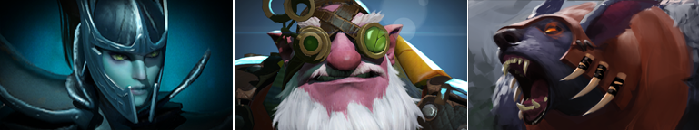
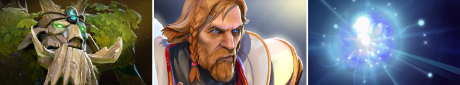
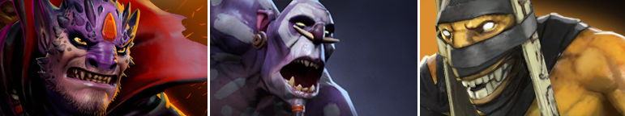

<!DOCTYPE html><html><head><meta charset="utf-8"><meta name="viewport" content="width=device-width, initial-scale=1, maximum-scale=1"><title>Presentasi | Role</title><link rel="stylesheet" type="text/css" href="bower_components/prism/themes/prism.css"><link rel="stylesheet" type="text/css" href="bower_components/todc-bootstrap-main/dist/css/bootstrap.min.css"><link rel="stylesheet" type="text/css" href="styles/main-presentation.css"></head><body></body></html><nav role="navigation" class="navbar navbar-inverse"><div class="container"><div class="navbar-header"><button type="button" data-toggle="collapse" data-target="presentation-chooser" class="navbar-toggle"><span class="sr-only"></span><span class="icon-bar"></span><span class="icon-bar"></span><span class="icon-bar"></span></button><a href="index.html" class="navbar-brand">Presentasi</a></div><div id="presentation-chooser" class="collapse navbar-collapse"><ul class="nav navbar-nav"><li class="dropdown"><a data-toggle="dropdown" href="#" class="dropdown-toggle">Pilih Subtopik <b class="caret"></b></a><ul class="dropdown-menu"><li><a href="1Penjelasan.html">Penjelasan DotA 2 Secara Umum</a></li><li><a href="2Role.html">Role</a></li><li><a href="3Warding.html">Warding</a></li><li><a href="4Sniper.html">Hero Guide : Sniper</a></li></ul></li></ul></div></div></nav><article id="presentation"><section><h1 class="bullet">Role</h1><p><em>Wait... I want to role my bicycle? (&#865;&deg; &#860;&#662; &#865;&deg;)</em></p></section><section><h1 class="bullet">Jadi, Apa pula itu Role?</h1><ul><li>Peranan ataupun Fungsionalitas yang sesuai Hero tersebut.</li><li>Satu hero bisa saja memiliki <b>satu atau banyak</b> Role.</li><li>Jenis-jenis Role itu sendiri pun banyak jumlahnya.</li><li>Salah terapkan Role pada Hero, Selamat! Anda akan <b>GG</b>.</li></ul></section><section><h1 class="bullet">Macam-macam Role</h1><p class="bullet">1.Carry<br>2.Lane Support<br>3.Initiator<br>4.Jungler<br>5.Support<br>6.Durable<br>7.Nuker<br>8.Pusher<br>9.Escape</p></section><section><h1 class="bullet">1. Carry</h1><p><em>"Will become more useful later in the game if they gain a significant gold advantage."</em></p><hr><p class="bullet">Tipe Hero yang bertugas sebagai "kendali" pada klimaks permainan <em>(Late Game)</em>.</p><p class="bullet">Dapat menghasilkan Damage "Dewa".</p><p class="bullet">Motto : <em>Money, Money, and More Money.</em></p><p class="bullet">Hero dengan Role ini harus dijaga oleh Tim dari awal permainan <em>(Early Game)</em> agar "kembang".</p></section><section><h1 class="bullet">Contoh Hero Carry :</h1></section><section><h1 class="bullet">2. Lane Support</h1><p><em>"Helpful in the early-game laning in protecting your team's carry."</em></p><hr><p class="bullet">Role ini dapat disebut juga sebagai "babysitters".</p><p class="bullet">Tipe Hero yang menjaga Hero Carry agar dapat "kembang" pada awal permainan <em>(Early Game)</em>.</p><p class="bullet">Dilengkapi dengan kemampuan untuk menghambat lawan ataupun mengisi <em>Health</em> atau <em>Mana</em> rekannya.</p><p class="bullet">Tidak disarankan <em>"berduet"</em> dengan Hero dengan Role lain. (Buat Apa Coba?)</p></section><section><h1 class="bullet">Contoh Hero Lane Support :</h1></section><section><h1 class="bullet">3. Disabler</h1><p><em>"Has a guaranteed disable for one or more of their spells."</em></p><hr><p class="bullet">Role ini bertugas sebagai <em>Crowd Control</em> Tim Lawan.</p><p class="bullet">Memudahkan Hero Carry dalam melakukan <em>Kill</em> Hero Lawan.</p><p class="bullet">Memiliki kemampuan menonaktifkan fungsionalitas tertentu Hero Lawan untuk sementara.</p><p class="bullet">Role ini memiliki kecepatan pergerakan yang relatif lambat sehingga mudah dihindari lawan.</p></section><section><h1 class="bullet">Contoh Hero Disabler :</h1></section><section><h1 class="bullet">4. Initiator</h1><p><em>"Good at starting a teamfight."</em></p><hr><p class="bullet">Role ini memiliki tugas sebagai Pemulai pada <em>War</em>.</p><p class="bullet">Merupakan salah satu Role <b>penentu</b> hasil akhir permainan <em>(Late Game)</em>.</p><p class="bullet">Memiliki kemampuan area yang mempengaruhi pengerakan / <em>Positioning</em> Tim Lawan.</p><p class="bullet">Role ini umumnya membutuhkan <em>Positional</em> Item seperti <em>Blink Dagger</em> ataupun <em>Force Staff</em>.</p></section><section><h1 class="bullet">5. Jungler</h1><p><em>"Can farm effectively from neutral creeps inside the jungle early in the game."</em></p><hr><p class="bullet">Role ini lebih efektif "kembang" apabila bermain di hutan dari awal permainan <em>(Early Game)</em>.</p><p class="bullet">Role ini akan menguntungkan rekannya karena dengan bermain "Solo", masing-masing akan lebih mudah "kembang". </p><p class="bullet">Memiliki kemampuan khusus untuk bertahan dari serangan Neutral Creeps di hutan.</p><p class="bullet">Lebih mudah terkena Ganking dari Tim Lawan dan bisa saja melemahkan Stabilitas Markas Tim Sendiri.</p></section></article><script src="bower_components/bespoke.js/dist/bespoke.min.js"></script><script src="bower_components/bespoke-bullets/dist/bespoke-bullets.min.js"></script><script src="bower_components/bespoke-scale/dist/bespoke-scale.min.js"></script><script src="bower_components/bespoke-hash/dist/bespoke-hash.min.js"></script><script src="bower_components/bespoke-progress/dist/bespoke-progress.min.js"></script><script src="bower_components/bespoke-state/dist/bespoke-state.min.js"></script><script src="bower_components/prism/prism.js"></script><script src="bower_components/prism/components/prism-bash.min.js"></script><script src="scripts/main.js"></script><script src="bower_components/jquery/jquery.min.js"></script><script src="bower_components/todc-bootstrap-main/dist/js/bootstrap.min.js"></script>